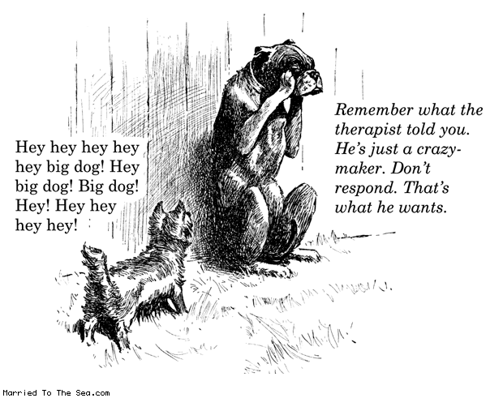

Gulp Testing Process
- Testing Gulp
- Verify watch is using ./build directory
- Test HTML - check
- Test SASS compile - check
- Test fonts - check
- Test images
- .gif - check
- .jpg - check
- .png - check
- Test JavaScript - check
- Ignore "use strict" message. It wants the "use strict" at the top of each function. Turning it off removes the strict requirement.
- Added .jshintrc to main directory with the following object
{"browser":true, globals":{"console":true}, "eqeqeq":true, "latedef":true, "nocomma":true, "unused":true}
- Usage Notes
- How do we handle putting library stylesheets like normalize.css into the /build directory? - Separate task. In build process but not in watchers.
- Allows start up when no files are present in ./dev
- Verify files are built to not require knowing they are in the ./build directory
JavaScript Animation
^_^
Gallery
